我们从铺瓷砖问题开始。想象一个长的水平放置的1×10的矩形方框。我们要用大小为1×1的方块和大小为1×2的多米诺骨牌铺满这个框。下面是平铺图：
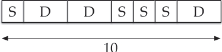
本章介绍著名的斐波那契数列1，1，2，3，5，8，13，21等。这个序列是为了纪念莱昂纳多·波那契（Leonardo Bonacci）而得名的，他也被称为“斐波那契”。
我们要求瓷砖S（1×1）和D（1×2）填满整个面积为1×10的方框（无间隙）。
我们要问的问题是：我们可以用多少种不同的方法来平铺大小为1×10的方框？
我们可以很容易地给这个问题的答案取一个名字：我们将这个答案称为F10，假设F代表“填满”。
绘制一个1×10的矩形可能被填满的图形，然后进行计数的过程是复杂且容易出错的。更好的方法是将问题简化。
与其试图找到F10，不如让我们从F1开始。这太简单了！我们只要计算出用方块（1×1）和多米诺骨牌（1×2）铺满大小为1×1的方框的方法。由于多米诺骨牌其实不适合分配的空间，所以只有一种解决方案：用一个正方形填充方框。换句话说，F1=1。
现在让我们试试F2，框架大小为1×2。我们可以用两个方块填充方框，或者我们可以用一个多米诺骨牌填充。填充1×2的方框有两种可能的方式，所以F2=2。
下一个：铺满大小为1×3的方框有多少种方法？我们可以把三个方块（SSS）作为一种可能性，或者我们可以放入一个单独的多米诺骨牌（我们不能放两个），要么靠左（DS），要么靠右（SD），那么会有三种平铺方式，F3=3。
还有一个特例：我们可以有多少种方法用方块和多米诺骨牌铺满一个大小为1×4的方框？下面是包含所有可能性的图：
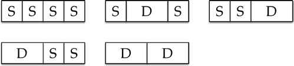
我们列出了五个，但这是所有方法吗？以下为检验方法。
框架中最左边的瓷砖可以是方块或多米诺骨牌。在图中，第一行显示以S开头的平铺方式，底行列出以D开头的方式。
当最左边的瓷砖是S时，我们需要用S和D来填充方框的其余部分。那么，其余部分尺寸为1×3，我们已经计算出有F3=3种方法来做到这一点。
现在，当最左边的瓷砖是D时，我们需要用S和D来填充方框的其余部分。但在这种情况下，剩余的空间要填充的尺寸是1×2。填充1×2的方式的数量是F2=2。
总而言之，有3+2=5种方法来平铺大小为1×4的方框，我们已经确认F4=5。
现在轮到你了。花几分钟时间查找大小为1×5的方框的所有平铺方法。数字不大，答案在[j2]。
让我们总结一下。我们使用符号Fn来表示用方块和多米诺骨牌平铺1×n的方框的方法的数量。原来的问题是计算出F10的值，以下是我们目前所知的值：
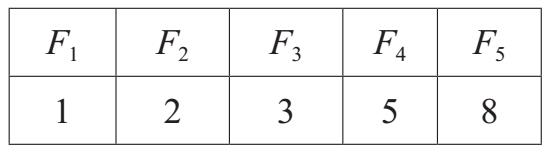
让我们继续。F6是多少？我们可以花时间去画出所有的可能性，但是这个过程很乏味。相反，我们可以把问题分解成两部分。有多少种平铺大小为1×6的方框的办法，其中（a）第一个瓷砖是S或（b）第一个瓷砖是D？好消息是，我们已经知道这两个问题的答案！
在情况（a）中，如果第一个图块是S，则剩余的空白空间大小为1×5，并且有F5=8种方式来填充它。在情况（b）中，剩余的空白空间大小为1×4，并且有F4=5种方式来填充它。因此F6=F5+F4=8+5=13。
F7的值是什么？同样的论证，F7= F6+F5=13+8=21。F8呢？F8=F7+F6=21+13=34。依此类推。我们观察到的是以下关系：
Fn=Fn–1+Fn–2
只需再做几次加法便可以得出F10的值。算出这个问题，答案在[i]。
斐波那契数是序列：
1，1，2，3，5，8，13，21，34，55，89，…
它是由以下规则产生的：
●前两项是1和1，且
●之后的每一项都是前两项之和
我们使用符号Fn来表示以n=0开始的第n个斐波那契数：
F0=1，F1=1，F2=2，F3=3，F4=5
以此类推。我们通过重复应用规则生成序列的其余部分
Fn=Fn–1+Fn–2
换句话说，斐波那契数恰恰是我们在本章开始所描述的铺瓷砖问题的解决方案。
斐波那契数有无数的有趣特性，令几代数学家为之着迷。许多数学家就这个主题发表过论述。在本章中，我们的目标是阐释一些有趣的数学证明方法，然后用第n个斐波那契数的公式作为结束。
当我们将前几个斐波那契数相加时会发生什么？也就是说，对于n的各种值，我们能从F0+F1+…+Fn得出什么。让我们做一些计算，看看发生了什么。
仔细观察下一页方框中计算出的结果（下一页）。你看到规律了吗？在阅读之前花几分钟，因为最好能自己发现这个结果，而不是简单地看答案。
你有没有找到这个规律？如果没有，回去继续寻找。
1 = 1
1 + 1 = 2
1 + 1 + 2 = 4
1 + 1 + 2 + 3 = 7
1 + 1 + 2 + 3 + 5 = 12
1 + 1 + 2 + 3 + 5 + 8 = 20
1 + 1 + 2 + 3 + 5 + 8 + 13 = 33
1 + 1 + 2 + 3 + 5 + 8 + 13 + 21 = 54
1 + 1 + 2 + 3 + 5 + 8 + 13 + 21 + 34 = 88
1 + 1 + 2 + 3 + 5 + 8 + 13 + 21 + 34 + 55 = 143
1 + 1 + 2 + 3 + 5 + 8 + 13 + 21 + 34 + 55 + 89 = 232
斐波那契数之和
我们希望你发现的是，右边的数字都比左边的一个斐波那契数少1。例如，将F0到F5相加得出：
F0+F1+F2+F3+F4+F5=1+1+2+3+5+8=20=F7–1
将F0到F6相加得出33，这比F8=34少1。这个规律适用于我们提出的所有例子，所以可以合理推出适用于所有非负整数n的公式：
F0+F1+F2+···+Fn=Fn+2–1（*）
也许用方程式（*）计算十几次就足以让你相信这个规律适用于所有的n，但是数学家需要证明。我很高兴向你介绍两种证明“（*）适用于所有整数n”的截然不同的方法。这两种方法被称为归纳证明（proof by induction）和组合证明（combinatorial proof）。
方程式（*）实际上是无限多个方程。证明（*）适用于特定的n的值，假设n=6，只是一个算术问题。我们观察F0和F6的值，并将其相加：
F0+F1+···+F6=1+1+2+3+5+8+13=33
然后我们观察F8（34），我们得到了预期的答案（确实如此）。
接下来我们检验n=7。我们可以将F0到F7相加，但这似乎是浪费时间。我们已经加到了F6，所以让我们利用这一点。因为F7=21，我们只需这样做：
(F0+F1+···+F6)+F7=33+21=54
和以前一样，因为F9=55，我们可以看到结果等于F9–1，如我们所料。
让我们证明（*）适用于n=8，我们将会更加懒惰。以下是我们已经知道的条件以及我们想要计算的内容：
已知：F0+F1+···+F7=F9–1
求：F0+F1+···+F7+F8=?
让我们用已知条件获得帮助：
(F0+F1+···+F7)+F8
我们知道圆括号内的和的值：它等于F9–1，所以让我们把它放入：
(F0+F1+···+F7)+F8=(F9–1)+F8
所以现在我们只需要计算F9–1+F8。我们可以通过查看F8和F9的值然后做一些算术来得出答案。但我们可以更懒惰！我们知道F8+F9=F10，所以我们完成了计算，而不必进行实际计算（甚至查找斐波那契数）：
(F0+F1+···+F7)+F8 =(F9–1)+F8
=(F8+F9)–1=F10–1
在n=7的情况下，我们已经成功地检验了n=8的情况。
可以通过相同的技巧从n=8的情况导出n=9的情况。（你可以检验一遍！）事实上，鉴于我们已验证（*）适用于n的某一个值，我们可以使用该结果来快速验证适用于（*）的下一个情况。
我们现在准备给出方程（*）的完整证明。正如我们所提到的，（*）不是一个单一的等式，而是一个无限的等式列表：对于从0开始的n的每个值，都有一个等式。以下是证明过程。
我们首先证明（*）所适用的最简单的情况，n=0。也就是说，我们只需要证明F0等于F0+2–1。因为F0=1且F2=2，显然F0=F2–1（这只是写1=2–1的一种奇特的方式）。
接下来我们将展示，如果我们已经证明（*）适用于n的一个值（例如n=k），那么我们可以通过类似“自动驾驶”的方式证明（*）适用于n下一个值（比如n=k+1）。我们所要做的就是展示“自动驾驶”是如何工作的。这是我们需要做的事情：
设k是一些具体的数字。
假设已知：F0+F1+···+Fk=Fk+2–1
求：F0+F1+···+Fk+Fk+1=?
我们想要计算F0+F1+···+Fk+Fk+1，并且我们已经知道了直到Fk的项的总和。让我们把已知代入：
（F0+F1+···+Fk）+Fk+1=（Fk+2–1）+Fk+1
右边是Fk+2–1+Fk+1，我们知道如何相加连续的斐波那契数。得：
Fk+2–1+Fk+1=（Fk+1+Fk+2）–1=Fk+3–1
代入后得：
(F0+F1+···+Fk)+Fk+1=Fk+3–1
让我们梳理刚刚的步骤。当（*）式加到FK这项时是正确的，那么（*）式中到Fk+1这项时也一定正确。
总结：
●对于n=0方程式（*）是成立的。
●如果（*）在一种给定情形下已知是成立的，则下一种也肯定是成立的。
现在我们可以肯定地说，（*）对于所有n的值都是成立的。当n=4987时，（*）是成立的吗？我们可以确定n=4986是否成立，这个问题转化为n=4985的情形，它取决于n=4984的情形，依此类推，一直回到n=0的情况。这样，方程（*）适用于所有可能的n值。
这种证明（*）的方法被称为数学归纳法（或归纳证明）。这种方法先给出一个基本例子的证明，然后证明后面的每一项如何由前面已经证明的例子推出。
我们现在介绍一种完全不同的证明（*）的方法。第二个证明的核心思想是使用Fn是这个计数问题的答案这一事实：用方块和多米诺骨牌铺满一个大小为1×n的方框的瓷砖数量。
为了方便起见，下面是我们想要证明的等式：
F0+F1+F2+···+Fn=Fn+2–1（*）
这个想法是理解这个方程的两边作为计数问题的解决方案。如果我们能证明（*）的左边和右边是同一个计数问题的正确答案，那么它们必然是相同的。这种计数被称为组合证明。
“组合”（combinatorial）一词是名词“组合数学”（combinatorics）的形容词形式，是数学的一个分支，源于本章开头像铺瓷砖问题这种计数问题。单词“组合数学”源自单词“组合”（combinations）。
问题是：（*）得出两个正确答案的计数问题是什么？这个难题就像电视竞赛节目《危险游戏》（Jeopardy）！参赛者在回答问题时必须提出问题。
右边更容易思考，所以让我们从右边开始。答案是：Fn+2–1。问题是什么？如果答案只是Fn+2，那么我们已经有一个问题可以提出：用方块和多米诺骨牌铺满一个长为（n+2）的方框的瓷砖数量是多少？
这个问题几乎就是我们想要的，但还不是。通过稍微修改这个问题，我们可以将答案调整为1。也就是说，让我们丢弃其中一个瓷砖，然后计算其余的。棘手的部分是认为其中一种瓷砖与其他瓷砖在某种程度上有所“不同”。是否存在一种不同于其他任何一个的瓷砖呢？
每块瓷砖都是由方块和多米诺骨牌组成的。只有一块瓷砖里完全是方块，其余的都至少有一个多米诺骨牌。我们用这个作为我们问题的基础：
问题：用方块和多米诺骨牌铺满一个大小（n+2）×1的方框，需要使用至少一块多米诺骨牌，有多少种铺法？
我们现在给出了问题的两个正确答案。既然它们都是同一个问题的正确答案，它们必然相等。
我们已经讨论过问题的第一个答案。长为（n+2）的方框有Fn+2种铺法。其中只有一种没有多米诺骨牌：全部由方块组成。
因此，问题的答案＃1是Fn+2–1。
问题的第二个答案能得出——我们希望——（*）的左边。让我们看看它的原理。
我们需要计算包含至少一个多米诺骨牌的铺法。那么让我们来想一下第一个（最左边）多米诺骨牌的位置。在方框中有n+2个位置，最左边的多米诺骨牌可以在位置1，2，3或任何位置，直到n+1，但它不能从位置n+2开始。
让我们来看一下n=4时的情形。我们要求大小为1×6的方框中至少有一个多米诺骨牌。我们知道答案是F6–1=13–1=12，但是我们会以另一种方式算出这个答案。
如图所示，最左边的多米诺骨牌可能位于1到5的任一位置：
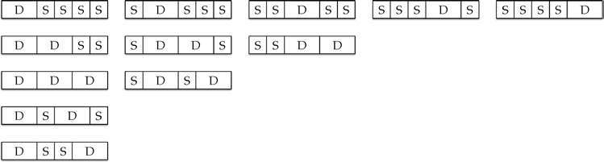
图中的最左列展示了大小为1×6的方框中最左边的多米诺骨牌位于第一个位置的铺法，第二栏展示了最左边的多米诺骨牌位于第二个位置的铺法，以此类推。
每列有多少种铺法？
第一列有五种，当我们忽略最左边的多米诺骨牌时，我们可以看到一个对于大小为1×4的方框的铺法，F4=5。
在第二列中，我们找到三种。忽略第一个正方形和最左边的多米诺骨牌，剩下的是大小为1×3的方框的铺法，F3=3。
其余列同理。当最左边的多米诺骨牌的位置给定时，我们计算有多少种铺法时，所有的变化发生在第一个多米诺骨牌的右侧。以下是我们发现的内容：
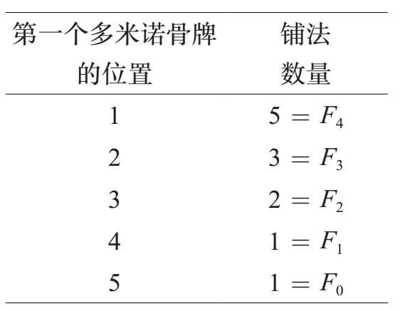
因此，用至少一个多米诺骨牌的方式铺满大小为1×6的方框的铺法是F4+F3+F2+F1+F0=12。结论：
F0+F1+F2+F3+F4=12=F6–1
这里，k可以是从1到n+1的任何值；我们不能让k=n+2，因为那样多米诺骨牌就会超出方框范围。
让我们深入到一般情况。我们给出的方框长为n+2。最左边的多米诺骨牌的位置在k时有多少种铺法？由于最左边的多米诺骨牌位于位置k，所以前面的位置k–1用正方形填满，接下来的两个槽位用多米诺骨牌填充。这些（k–1） +2=k+1个位置没有任何灵活性。但是，其余的（n+2）–（k+1）位置可以用我们选择的任何方式平铺。由于（n+2）–（k+1）=n–k+1，所以对该方框的该部分进行平铺的方式的数量是Fn–k+1。如下图所示：
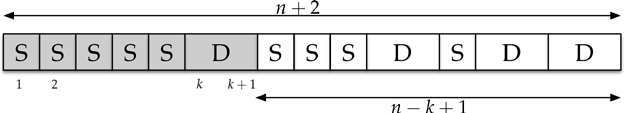
注意，长为n+2的方框中的第一个多米诺骨牌在位置k。这意味着从1到k+1的位置已经被设定，剩下的n–k+1个位置可以用Fn–k+1的方式平铺，其中k的取值范围是1到n+1。
注意，当k从1变化到n+1时，n–k+1的值从n降低到0。因此，用至少一个多米诺骨牌的方式铺满长为n+2的方框的平铺方法数量是Fn+Fn–1 +Fn–2+…+F1+F0，它在（*）的左边（只需要换个顺序书写）。
因此，F0+F1+…+Fn是问题的答案#2。
我们提出这个问题，发现了两个正确的答案。答案＃1是Fn+2–1，答案＃2是F0+F1+… +Fn。由于这两个表达式回答的是相同的计数问题，它们是相等的，并且（*）得到证明。
两个连续的斐波那契数相加产生另一个斐波那契数。在本节中，我们思考如下问题：当我们将连续斐波那契数相除时会发生什么。具体而言，我们考虑k值越来越大时的分数
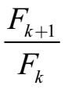
。下面的图表显示了从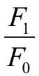
到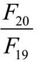
的结果。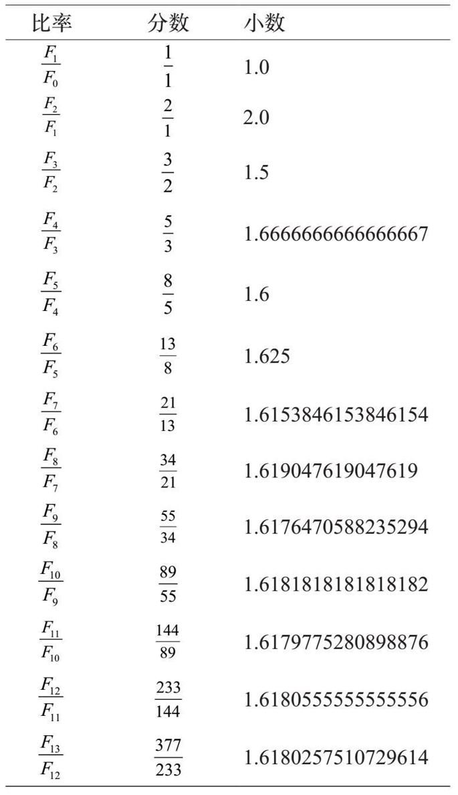
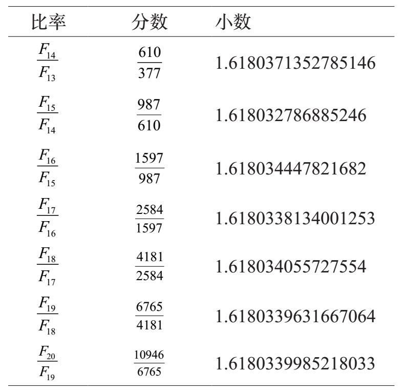
连续斐波那契数的比率
随着斐波那契数值越来越大，我们计算出的商迅速接近一个常数值，大约是1.61803。这个数字是什么？
知道这个数字后你可能会很惊讶，它非常有名，如果把它输入到谷歌，你会被引向大量的关于黄金分割（golden mean）的网页。这个数字是什么？
有些人称这个值为“黄金比率”。
连续斐波那契数的比率并不完全相同。然而，对于大的斐波那契数字，它们几乎是一样的。所以，为了确定1.61803这个数字是什么，让我们假设比率都是一样的。我们称之为“比率x”，因此：
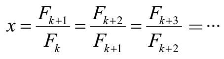
这意味着Fk+1=xFk，Fk+2=xFk+1，以此类推。可以联立为：
Fk+2=xFk+1=x2Fk
同样，已知Fk+2=Fk+1+Fk，因此：
x2Fk=xFk+Fk
如果我们除以Fk并重新排列，我们得到二次方程式：
x2–x–1=0
使用求解公式，我们发现这个二次方程有两个解：
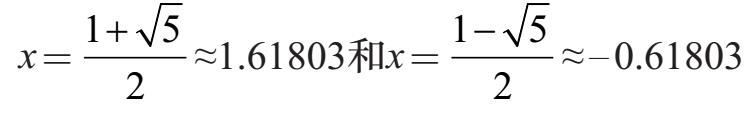
其中第一个是我们看到的数字。希腊字母φ（phi）通常用来表示黄金分割：
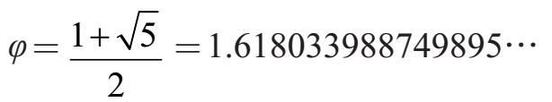
我们观察到的是连续斐波那契数的比率越来越接近（收敛到）φ。这很好，它也给了我们一个有趣的方式得到斐波那契数字的近似值。
斐波那契数的实际序列是F0，F1，F2，F3，…如果比率
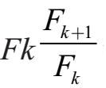
都是相同的，我们将得出以下形式的公式：Fn=cφn
其中c是某个数字。为了看看这个美妙的过程，让我们用n的几个值比较一下Fn和φn：
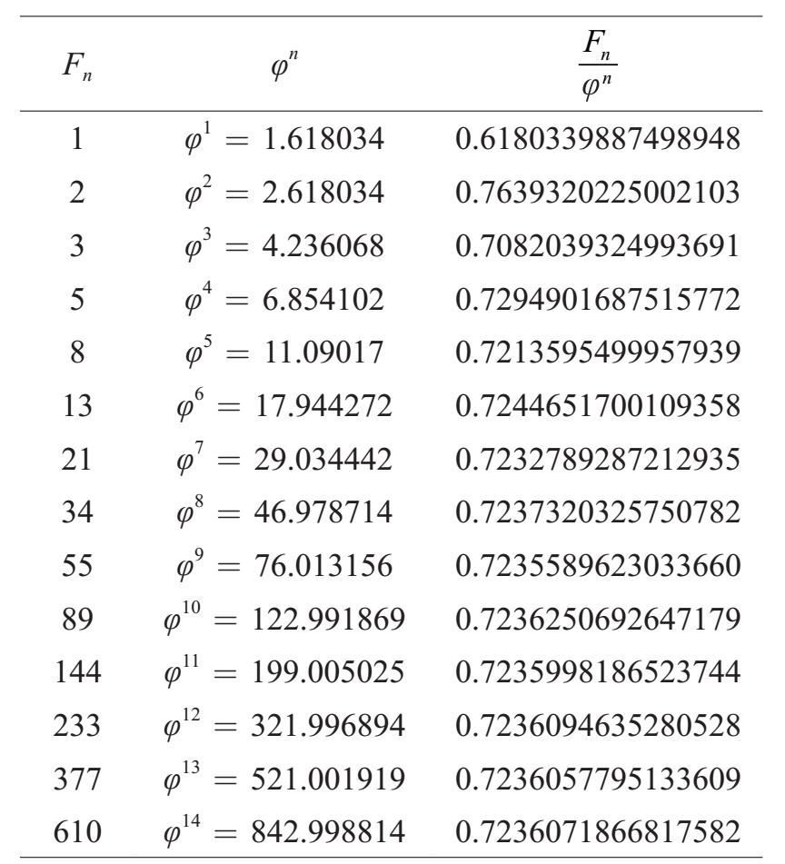
对于较大的n值，我们发现
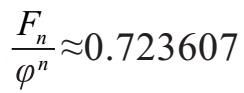
。通过更多工作，我们可以证明0.723607…恰好由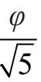
得出。换句话说，即：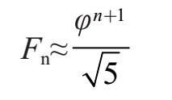
这个近似值有多少？换另一张图表！
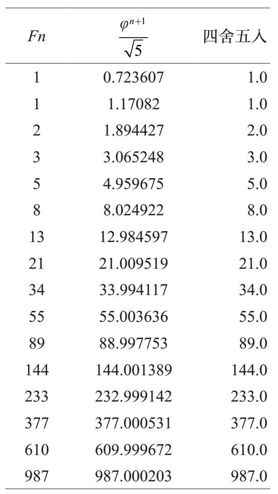
注意，当我们将
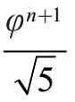
四舍五入到最接近整数时，结果正是Fn。如果你对这个公式的“四舍五入到最近的整数”的方面感到困扰，下面的公式给出了一个确切的结果，它得益于雅克·比奈（Jacques Binet）：
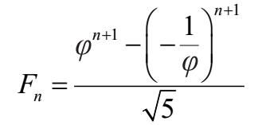
这里是所有大小为1x5的方框的铺法：
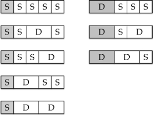
注意，以S开始的铺法为F4=5，以D开始的铺法为F3=3。因此，有5+3种铺法，所以F5=8。
F10的值（即开头铺瓷砖问题的答案）是89。